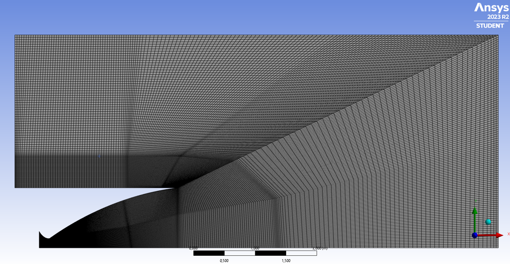
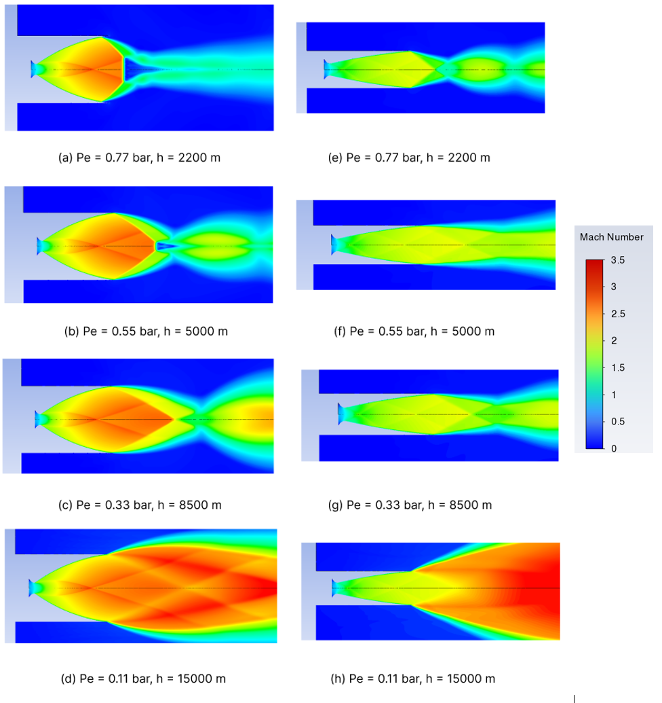

Application of CFD programs to the design of rocket nozzles.
Exploring the limitations of CFD simulations to optimize the rocket nozzles design process
During four months, I have been studying how CFD works and how we can apply this technology to the research of better rocket nozzles.
Motivation
Nowadays, more than ever, science and technology are accompanied by economic development, even more so in the aerospace industry, where the cost of projects can reach millions of euros, and there are many companies involved with economic objectives behind them. In this work I want to explore a possible solution to reduce costs in aerospace vehicle design processes using CFD (computational fluid dynamics) programs.
But, what are CFD programs?
Also known as Computational Fluid Dynamics, this programs aims to provide engineering solutions to complex and modern problems. From electromagnetic waves analyses of an antena to mechanic or heat stress analyses of a mechanic part of an industry machine. In the right hands, these programs can improve significantly the workflow of engineering projects, making the R & D part cheaper and faster.
Nozzle analysys
An application of CFD programs is the thermodynamics analysis. Here, I use this functionality to analyze the behavior of the gas in the typical convergent-divergent nozzle of a rocket. I have used ANSYS Fluent. First, I started by designing a nozzle geometry in ANSYS and adding a dense mesh. I have also designed the environment of the nozzle.

It's a good practice to design only half of the piece if it is symmetrica as it can save a lot of computational resources.
Engines on
Then, we only have to run the simulation. Here we define the initial conditions, and we run the simulation. In this case, I ran a series of experiments where I changed progressively the exterior pressure and temperature conditions to simulate the ascension of the rocket. I also changed the combustion conditions to use a liquid rocket fuel (made by liquid oxygen and hydrogen), and I also changed progressively the combustion pressure.
Then, I also designed another nozzle with different geometry to compare them. Here are the results for different heights and exterior pressures (Pe) analyzing the speed of gases (and therefore, the rocket thrust).

Conclusions and results
With this simple analysis, we can conclude which nozzle is better depending on the exterior pressure. We can also study the shock and normal waves, the subsonic and supersonic motion of gases, their distinct behavior, and the subexpanded and overexpanded nozzle states. These are all very interesting fluid dynamics topics that I recommend searching something about them on the web. If this has been done with a decent but humble PC, imagine what can be done with a supercomputers array. Therefore, I personally think that CFD is the future, if not the present already, of engineering project design.